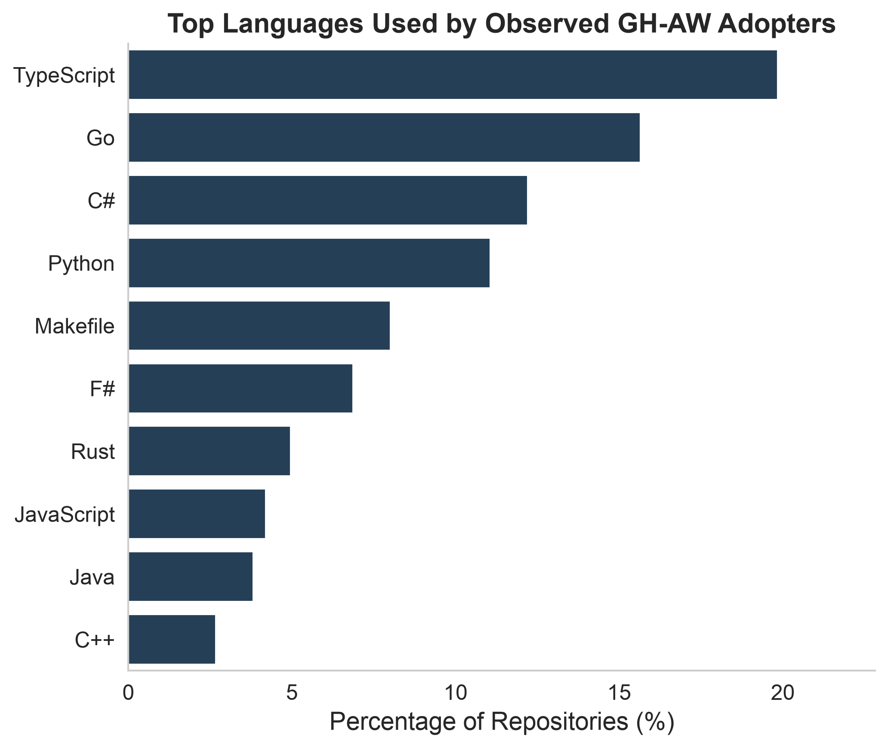
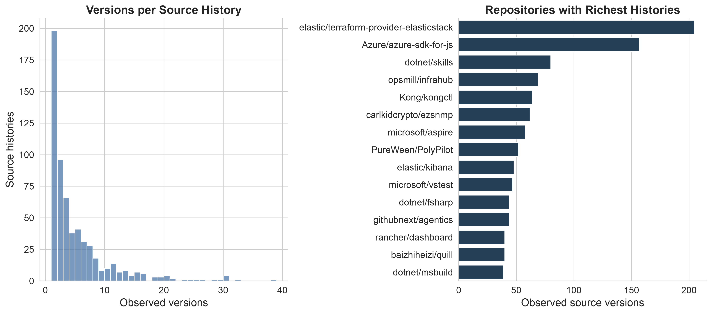

Load GHAW-H
Read all five tables and construct the core analytical joins.
Open in Colab →A longitudinal dataset of versioned GitHub Agentic Workflows in early-adopter open-source repositories
GHAW-H connects repository metadata with the observable history of natural-language workflow specifications and their aligned lock files. It contains 262 repositories, 604 source histories, 2,820 Markdown versions, and 2,820 lock snapshots.
GitHub Agentic Workflows are natural-language automation specifications stored as Markdown and compiled into GitHub Actions lock files. GHAW-H preserves their observable evolution instead of reducing each repository to a single current snapshot.
Every published record is backed by a GitHub artifact or API response. The release separates immutable source content from its position in a commit history, enabling reproducible longitudinal analysis without exposing the private collection and construction system.



The five-table source_history profile keeps repository identity, immutable snapshots, ordered versions, longitudinal histories, and aligned lock artifacts conceptually separate.

The notebooks load the public Parquet tables directly from Hugging Face. They do not require access to the private builder repository or authorization through GitHub.
Read all five tables and construct the core analytical joins.
Open in Colab →Inspect coverage and reproduce the cumulative adoption figure.
Open in Colab →Compare adoption across repository language ecosystems.
Open in Colab →Explore version depth, history span, and temporal change.
Open in Colab →If you use GHAW-H, please cite the dataset. Paper-specific bibliographic details will be added when available.
@dataset{ghaw_h_2026,
title = {GHAW-H: GitHub Agentic Workflow Histories},
year = {2026},
url = {https://huggingface.co/datasets/pavtch/GHAW-H},
version = {0.1.0}
}